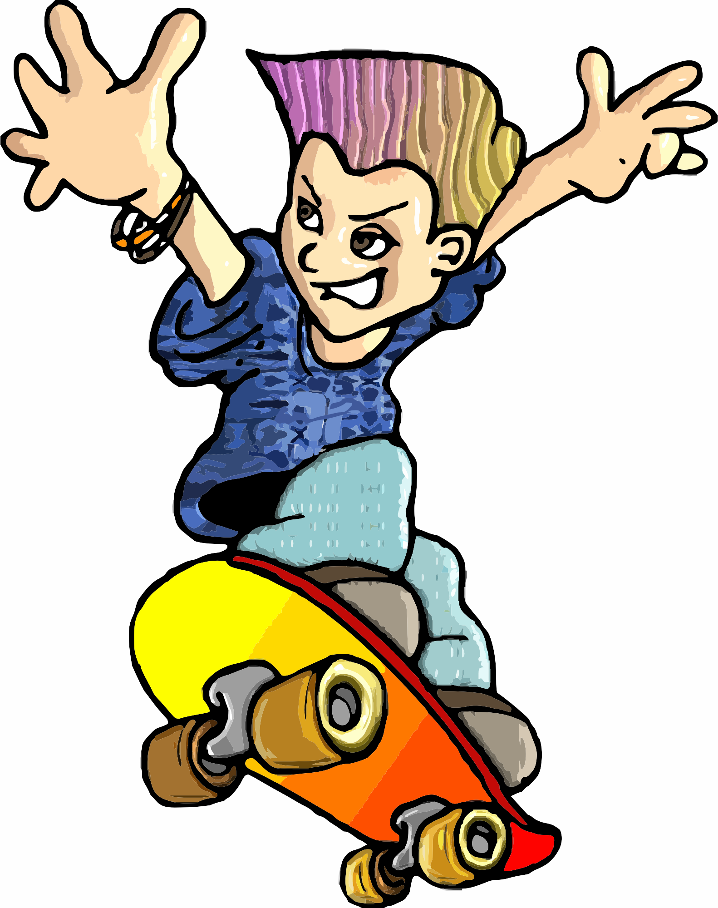
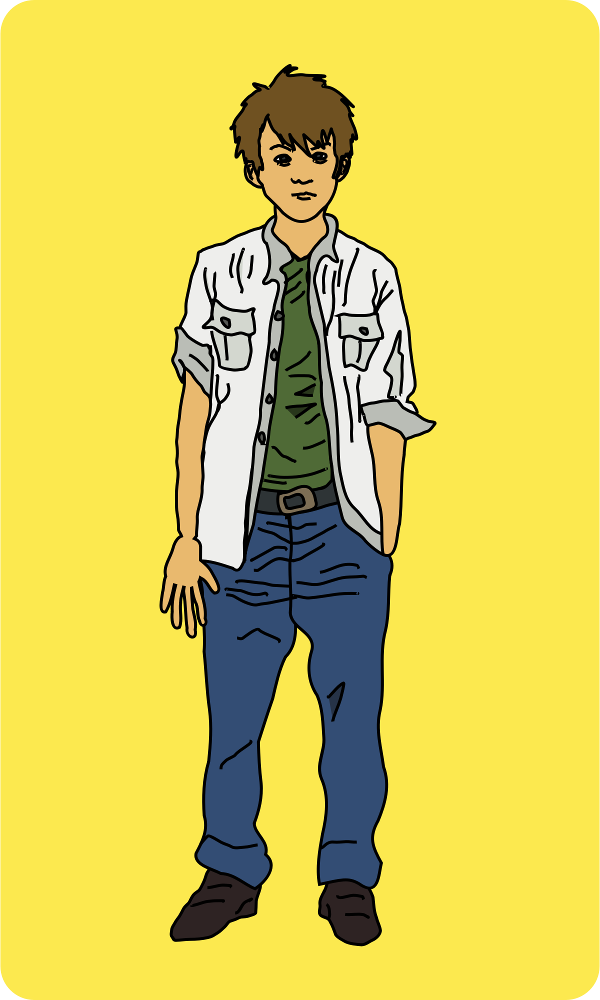
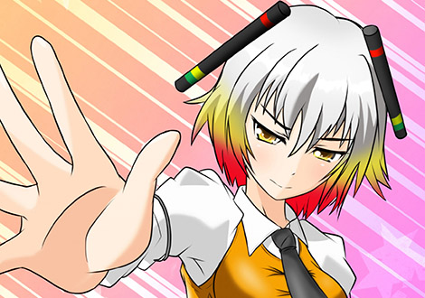

It was a brand new day, and it wasn’t any ordinary day! I was going to space, and who knows what interesting things might be found beyond. Furthermore, since there has been a new technological advancement made by The Number One Scientist, Doctor Roy, there is now a way for humans and certain animals to be able to survive on certain planets without a spacesuit.
I better get going or else they will leave without me! I went to the launch site, making sure to collect all of my stuff beforehand. Eventually, the spacecraft launched! I was so excited, and a little nervous. Would I come back alive? Only time will tell!
Everyone was divided into groups with some interesting people.
There was this guy named Joshua or as most called him Josh, who was telling weird stories to people. He was always on his skateboard.
There was also someone named Jack, who was messing around and trying to touch buttons to see what they did. It felt like I somehow had met him before, but I couldn’t put my finger on it.
There was also a girl named Laura who was always talking about cooking and other food related things.
Lastly, there was a dog named Frisk. The most interesting thing about Frisk was the fact that he could talk. He says someone put a device on him made by Doctor Roy. Frisk was a prankster and always played tricks on people.
Eventually, the ship ran out of fuel. We shifted the ship to landing mode, but, suddenly, something hit the ship! We had a crash landing, the ship was destroyed, and we landed on a strange planet. Everyone panicked about being trapped on this weird planet.
During all of the chaos, Jack had an idea. He said, “Let’s try to find materials and resources on this planet, make a home, and then make a new ship with any available materials.” Everyone agreed with Jack. The one problem was the fact that it would be hard to get Laura, Josh, and Frisk to stay on task since they were too focused on their cooking, stories, and jokes.
The sky was a dark purple, the environment was dull, and the dust in the air seemed to swallow the soul into darkness.
Eventually, we made a building that we could all sleep in using some of the planet’s materials and some of the ship parts from the broken spacecraft. It wasn’t much. It looked like a discolored log cabin, covered in iron. Despite this, it was what we called home for now. The next day we saw a small red laser fly above us. Jack, with his curiosity, went to check it out. Frisk and I went too. We were walking and Frisk jumped right in front of Jack and barked really loud. This caused Jack to jump, and he slid down a hill, “Ha ha gotcha!” Frisk said. “Why did you do that, Frisk!?” Jack yelled. “Because it’s funny!” Frisk said. Jack felt something tap him, and he said, “What are you doing now, Frisk?” “Nothing,” replied Frisk. “Then what’s tapping on my back?” Said Jack, confused. “I don’t know - an alien?” Said Frisk. “But this planet looks lifeless. There are no aliens!” Said Jack. Then Jack turned around and saw something. “Ahh! It is an alien!” screamed Jack!
The alien was trying to talk to us. “gsgwnbegdybdbgus&” We weren’t able to understand it because we didn’t have the Alien Translation Device made by Doctor Roy, so we ran away. When we got back Jack yelled, “Josh, Laura! We just saw an alien, but we didn’t have the translation device!” “Did it look like a werewolf?” Said Josh. “NO! Please take this seriously. We might be in danger!” Jack yelled. “Maybe I can cook something for them,” said Laura. “How do you know that they will like random food from the field? I remember when I tried to feed a werewo…” Josh said, and got interrupted. “ENOUGH WITH THE WEREWOLVES!” Jack said, screaming at the top of his lungs! “This is serious and we have to do something!” Jack said. “Why did the cat run across the road…? To get away from me!” Said Frisk in a comedian type voice! “This is no time for jokes ,Frisk!” Said Jack. “Let’s go back tomorrow with the translation device,” I said. “Great idea! Let’s go at sunrise or whatever sunrise is on this planet,” Said Jack.
When sunrise hit Jack woke up and yelled “Wake up everybody! Time to wake up and go!” “What did you see, a Bigfoot, and now trying to escape?"" Said Josh. “NO! There are no Bigfoots on this planet, or on Earth for that matter, and did you already forget that we were searching for the aliens!?” Jack yelled angrily. “Look, I don’t want anything to happen to us, and I want you all to be safe, but you have to take this seriously because our lives are on the line,” said Jack. “We should all go, and check it out.” Said Jack. I had a bad feeling about this, but I decided to just go, and get it over with.
We went back to the same place where Frisk caused Jack to fall downhill and where we found the alien. When we went further, we saw a strange looking town, but it looked deserted. It looked like a dry alien desert. It was dark and filled with dust, and it gave a gloomy feeling. When we went near one of the houses, the door opened and we saw an alien. Jack turned on the translation device. “Who are you, and what are you doing here?” Said the alien. “You see, our spacecraft made a crash landing, and we are stuck here. We don’t mean you any harm. Could you perhaps help us get home?” Jack said. “No, we don’t trust aliens. Now get out before we destroy, or lock you away!” The alien yelled. “I have a question for you. Are there any werewolves, Bigfoots, or other stuff here?” Josh said. “What!?” Said the alien. “Josh, are you brain dead? You are going to make the aliens angry and they will attack us!” Yelled Jack. “Oh I remember when I was attacked by a w…” Josh tried to say. “Don’t even say it! No one believes in your werewolves and junk! I wish you weren’t in our group! I will have to build a rocket ship just to get rid of yo…” Jack said and got interrupted. “Enough! Soldiers, attack these invaders now!” The alien yelled. Anwhole bunch of aliens were running towards us! “We have to get out of here!” said Josh! “Oh, now you get it. We shouldn’t have had the argument in the first place! What do you have to say for yourse…” Said Jack, and got interrupted. “We don’t have time for arguing, we have got to go now!" Yelled Laura! Laura grabbed Jack and Josh’s arms and ran!
We got back into the house, and we took deep breaths. “Josh, how could you! You could have gotten us killed! Don’t ever do that again! Now the aliens are our enemies, and we have to stay alert from now on!” Yelled Jack. “Let’s just go and collect resources,” I said. We should also take the swords from the cargo in the rocket so we can defend ourselves against the aliens. “Good idea. I have had a little bit of experience with a sword once in my life.” Said Jack “Great,” I said! We went out collecting resources, and we had conversations about various things.
“Hey, you know Doctor Roy?” asked Jack. “Yes,” I said. “He became the number one scientist in the world. It is easy to see why. His inventions are very impressive. They are why we are able to survive here. They are why Frisk is able to talk. They are also why we were able to talk to the alien. I even helped with some of them, but sadly they are also why we are trapped here. Well, machines always have their bad sides right?" (BUT THAT WAS WHEN IT HAPPENED)
“You know, I have a story to tell about Doctor Roy,” I said. “I actually strongly dislike him! Do you know why? Because I wanted to be The Number One Scientist but I have always failed to top him.
“There was a time where I used to work with Doctor Roy. But one day I was trying to do something in the lab, but he said it was too dangerous. I did it anyway, but it blew up one of his inventions and gave me ice powers that could freeze anything forever! After that, I was fired. I saw someone coming in as a replacement, and that someone was you Jack!"
I tried to do things on my own but nothing worked. I started to grow frustration and anger towards him. The only reason I joined the expedition is so I could look at his technology and do better than him! But I saw you. My replacement. I wasn't sure at first, but then I grew angry when I found out that it was you, so I cut off the fuel supply so that we would be stranded in space forever! But now, you are trying to make a new ship and leave! I will not stand by this! You all have relationships with Doctor Roy, but I specifically dislike you Jack, because you are the one that was chosen to be my replacement! If it weren’t for you, I might have still been there, and then I would become better than Doctor Roy. You! My replacement! You are the one that ruined me, so you will pay. Oh, you don’t know my name? My Name is James, or as most people call me, James Despair the Snow King! “YOU BE THE HERO AND NEW PROTAGONIST OF THIS STORY JACK, BECAUSE IN A FEW SECONDS YOU WILL BE FROZEN IN ICE FOREVER!” James screamed!
“So you’re James Despair!? James Despair the Snow King!? The guy who has been going around and freezing people in ice with your ice magic!” I yelled. “Yes, I became that because I lost hope after being fired.” James said. “But that’s horrible!” I yelled! “You! You Jack! The one who replaced me! PREPARE TO BE FROZEN FOREVER!” James screamed! James grabbed his sword, covered it in his ice, and swung at me! But it wasn’t the end yet.
A laser hit James, and knocked the icy sword out of his hand. “WHAT!” James yelled.
The alien that had shot James stood silently, and walked into the shadows. After that, James held up his sword, and I held up mine. It was a sword battle of the ages on an alien planet. We slashed and blocked, but we were just hitting the swords against each other. “Whoever survives is the better one. Whoever is victorious is the best. If you win, that means there was a good reason you were my replacement, but that won’t happen! Soon enough, my sword will freeze you!” I knew I couldn’t talk him out of this. I wish I could, but I can’t. I wish I could negotiate with him, but I can't. Fighting is the only way for now, I thought. The sword fight went on for a little bit until I hit James. After that, I stopped fighting and said there is a better way. Then he got up, and knocked the sword out of my hand. That is when the alien from before shot James again. Then James fainted. After that, the whole alien army came and threw him in their dungeon and left me alone. I was saved by the aliens but I didn’t know why…
I knew it wasn’t a good idea to stay here because I knew the aliens might come back and capture me, so I went back. "How am I going to explain this to everyone?" I thought. When I got back, Frisk asked, “Where is the other guy?” “It’s a long story,” I replied. I told everyone the story of James’ relationship with Doctor Roy, how he was actually James Despair, the big sword fight we had, and the aliens that shot and captured him. Everyone was shocked. One big mystery was why the aliens left me alone. For now I said, “let’s collect materials, and come back to the alien town when we are prepared.” Everyone agreed. “By the way, did you see a werewolf while you were fighting?” Josh said. “NO!” I yelled. “You have to start taking things seriously if you wanna survive on this planet. You remember what happened when you told the aliens about the werewolves right? They attacked us!” I yelled. “Tomorrow, let’s collect resources so we don’t die out here.”
When the alien sun came up we were ready to collect resources and food. The biggest problem was water, because it would be dangerous to drink the liquid on this planet. Therefore, we had a time limit to get out of there because the only water we had was water from the cargo. Most of it had spilled and the water wouldn’t last forever. If only there was someone who would be willing to test the water who wasn’t an alien who already lived there. As someone working for Doctor Roy, I should have bought some lab mice so they could drink the liquid here to see if it isn’t poisonous. Actually there might be lab mice in the ship remains, but they are probably dead, I thought.
I explained to everyone about are water situation, and I said we must not drink too much water because we have a limited supply. “Oh, I remember when I was in the wilderness, and I had a limited supply of water, but then a werewolf stole my water, and…” Josh tried to say. “Shut up about those werewolves already!” I yelled.
After we collected resources, we checked to see if there were any lab mice in the cargo. Thankfully, there were two that were alive. We went to one of the rivers and collected some of this planet’s water. After that, we put it in a bowl. “What would these rats be if there was a cat here…? Stomach mice! Because the cat ate the mice!” Frisk said. I grabbed a Frisbee from the cargo. I threw the Frisbee, and yelled, “FETCH!” “Oh boy!” Frisk yelled. Then he ran after the Frisbee, then he caught it. Then he came back, and said, “Can you do it again 6000 more times ha ha ha,” “No,” I said. We have to give the water to one of the lab mice to see if this water is poisonous.
We gave the water to one of the mice, and it drank the water. “Wait, is that my dish! Clean my dish now! I won’t drink from a bowl that contained possibly poisonous water that a mouse drank!” Frisk yelled. “Sorry, Frisk,” I said. After the mouse had finished the water, it seemed fine, so we put it back in a cage. We kept it away from the other mouse, so if it gets a disease, it won’t spread to the other mouse. We went to bed to see what happened to the mouse overnight.
When we woke up in the morning, we went to check on the mouse. When we went to the cage, we were shocked to see what we had just saw! The mouse had grown a third ear on top of its head, and it grew a second tail! When we opened the cage door, the mouse came out, and it acted like a dog with rabies. “Don’t worry, I didn’t drink the water. I’m ok! Frisk yelled! The mouse spun its tails, and it lifted from the ground a little bit, but then it fell down, and its tails were tied.
We ran away from the mouse because it was trying to bite us! “No way am I ever drinking that water!” Laura yelled. “That mouse was acting even crazier than a Bigfoot I encountered. That Bigfoot put up quite a fight! I remember it like it was yesterday, I was trying to get away from it but…” Josh said, and got interrupted. “All right already!” Frisk, Laura, and I yelled!
“I guess I will cook some of the plants we harvested.” Laura said. “NO!” I yelled! “We need to feed the other mouse so we know it’s safe.” “Ok. I guess we will eat leftovers from the cargo then.” Laura said. “Just cook the food, and feed it to the mouse,” I said. “Okey dokey Jack!” Laura said.
Afterward, Laura cooked the food, and fed it to the mouse. We hopedthat the food wasn’t poisonous. After that, we waited for a few days. Laura fed the mouse every day. Nothing interesting happened, mostly just the collection of resources and food.
After a week, nothing had really happened to the mouse. We assumed the food was okay after it was cooked, so we tried eating it ourselves. “Wait, I have an idea! Since cooking the food makes it edible, let’s try boiling the water and then feeding it to the mouse! Also, this isn’t one of my jokes.” Frisk said. “That’s an interesting idea. I remember when I had to give a baby werecat boiled milk, because the mother werecat abandoned its baby, and I had to take care of it.” Josh said. “Yeah, yeah that’s nice, but seriously werecats!? Your stories seem to get worse each time you tell them!” I yelled!
After questioning Josh’s story, Laura began to boil some of the planet’s water, and she gave it to the mouse. Again, another week went by, and we were almost out of water. Nothing happened to the mouse. We were excited to discover that we were able to drink the water if it was boiled. Throughout the two weeks, we expanded the house, and we recovered some of our technology. We also replicated the aliens’ laser guns too. After this, we thought we were ready to go back to the alien town.
We just needed a little more preparation before we could take on the aliens and get home. We were filled with determination. We had our weapons, our translation devices, supplies, and a force field to protect the house. We had been on this planet for almost a month, and we were ready to get back to Earth!
“Maybe we can build army robots, because I don’t think the four of us will be able to take down a whole army,” Josh said. “For once, you said something sensible, Josh,” I replied. “No that’s wrong! My stories are sensible, and they are real!” Josh yelled! “No, they are fake,” Frisk said. “Yeah what Frisk said! Your stories are a bunch of lies!” I yelled. “No! They are as true as the sky is purple on this planet!” Josh yelled. “Oh, no, everybody! Mr. Werewolf is getting angry! Run! Ha ha ha.” Frisk said in a laughing voice. “STOP! That’s enough arguing. You want to go home right!?” Laura yelled! “Okay, I will stop, but my stories are true!” Josh said. “Josh did have a point about the robots though. They could help us get past the aliens,” Laura said.
Eventually, after all of the talking, we started to build the robots. It was a lot of work, and we needed a lot of resources. “I just hope they don’t have blue hedgehogs on this planet ha ha,” Frisk said. It took a lot of development and work. We thought we wouldn’t be on this planet for much longer, but it took us two months to finish work on the robots. We also built vehicles that we could drive in.
After all of this preparation we were ready to go to the alien town. Who knows what will happen. Will we come out of this alive? ONLY TIME WILL TELL!
It was time to go to the alien town. We were all prepared. We had our weapons, we had our defenses, we had our robotic soldiers, we had everything. If we lose, the aliens might be a terrible threat towards Earth.
“We also need some werewolf repellent to keep them away!” Josh said. “Shut up!” I yelled. “We don’t have time for your dumb werewolves now! We have to go now before it’s too late.” “What do you call a cow that can’t give milk…? Udderly useless! Hahaha!” Frisk said.” Frisk, we don’t have time for this right now!” I yelled. “Oh, no everybody! Jack can’t take how hilarious my jokes are!” Frisk said! “I am sorry but my sensors indicate that your jokes are not that funny,” one of the robots said.” Let’s just go now, and get this over with!” I said!
Now it was really time to go. We had everything ready. We got in the vehicles, and we drove to the alien town. When we got to the town, we turned on the translation device. “Oh, returned to our village I see. You must really be looking for trouble I see. Oh I see you have weapons so you intend to get through by force huh. Well that won’t happen! Soldiers, the intruders are back - attack!” The alien yelled.
Suddenly, the whole alien army came toward us. They were shooting laser guns at us. We had to dodge each of the shots. They fired their guns, and we fired ours. It was a tough battle! We had defeated some of them, but more and more came. They destroyed some of the robots. It was getting intense. It looked like it might be the end of us.
Suddenly, I got shot. I fell to the ground. I knew my life was finally over. One of the aliens walked up to me, aimed its gun at me, put its finger on the trigger, then it pulled the trigger, and shot their own Commando!?
"Traitor! What is the meaning of this soldier!?" The Alien Commando said.
I sat down confused. Confused of why the alien shot its own commando, but I had realized that it was the same alien that shot James. So I asked, “why did you save me a while ago?” It stood silently, and took off its mask.
Josh, Laura, Frisk, the aliens, and I were all surprised to see what was under the mask. It was Doctor Roy. “WHAT!!!?” We all screamed! “Doctor Roy! What are you doing here.” “Well I have a lot of explaining to do huh.” Doctor Roy said.
“First, let me put us in a force field,” Doctor Roy said. “Now, let me tell you the story of how I got here. When your ship launched, I had realized one of the people who was in your group was James Despair. I knew I had to track down your space shuttle to stop James. While I was flying, my ship was shot down, and I crashed here. I went to this alien town, but they chased me out. This gave me an idea. If I disguised myself as one of the aliens, they would think I was one of them. Thankfully, this strategy worked.
“When I saw you fighting James, I knew I couldn’t ignore it, so I shot him twice. I had to leave, though, because the other aliens would see through my disguise. It was difficult just getting them to spare Jack. I told them to throw James into the dungeon. After that, I fixed my ship, and it was ready to launch,” Doctor Roy explained. “Ha, ha, were you talking about me?” I heard a voice that I recognized in a bad way. Darkness filled my soul, but I stayed filled with determination. This is the beginning of the END!
James appeared out of nowhere, and smashed the force field with his ice sword. “Long time no see, Doctor Roy.” James ran towards Doctor Roy and attacked. I ran ahead and blocked his attack. Then the alien shot at me, Roy, Josh, Frisk, Laura, the robots, and James. We were all dodging the attacks of the aliens while fighting James. Frisk jumped through all of the lasers, and said “What do you call a Snow King, who has been bitten…? A Shaved Ice Prince!” Then Frisk bit James. Then James kicked him. Then the robots ran toward James. They knocked him down.
I came toward James, then he kicked me! Then he got hit by one of the aliens, but that didn’t stop him. He walked up toward me and held his hand out toward me with a freezing aura surrounding it. Before he could freeze me, Laura threw eggs at him. The yoke blocked his line of site, then Doctor Roy trapped him in the force field, so we were able to fight the aliens. After a little bit of fighting, James broke out of the force field and attacked!
He ran toward me and Doctor Roy, but then Josh snuck up on him and punched him. Then James fell over. Eventually, James got back up, and he ran toward the aliens with his freezing hands, but something made me do something.
I ran toward the aliens and blocked James’ attack. The aliens seemed shocked that I had saved them. “Jack, what are you doing? They are the enemies!” Doctor Roy yelled! I know, but they don’t deserve to be frozen forever! They are just trying to protect themselves.
Defending the aliens caused them to think about the situation. The aliens joined us, and they started shooting at only James.
Dr. Roy then ran toward James and tricked him into shooting an ice beam into Roy's energy extractor! He told us and the aliens to power the laser guns with James' extracted ice magic. I aimed at James with the new ice gun and yelled, "Now it's time for a taste of your own medicine, Snow King!" I fired an ice beam right at James and it was a direct hit!
James collapsed. “This is the end for me. Doctor Roy, you were always better than me. I should have known I would never be better than you. I should have known not to perform that experiment that destroyed your inventions. I shouldn't have blamed you either, Jack, or took any of this out on you, Laura, Josh, or even Frisk. I know that I am a horrible person. I am sorry for all of the people that I have frozen. I am also sorry for breaking out of the dungeon, and stealing your food. I also know that you will never forgive me. It's so cold! I am about to be frozen! Now I know how it feels. Lock me away in a freezer when you get back to Earth please. I will undo my ice spell so that everyone that I have frozen returns to normal. Heh heh, James Despair, the Snow King, frozen, ha... ha... very..... funnyyyy............” James said, and then he froze in his own ice.
Well I guess this is goodbye. Now we are going to go home. “Goodbye, and thanks for saving us from that ice maniac,” the aliens said. “You’re welcome,” I replied. “Jack, the spaceship is ready to launch!” Doctor Roy said. "By the way, what is this planet called anyway?" I asked the aliens. "Zilazochrome is the name of this place. It hasn't been that long since we arrived here actually. We had a rough entrance since we weren't welcomed by some talking green cheetahs but we pulled through and now they are looking for a new home." One of the Alien Commando replied. "Interesting..." I said as this all seemed very familiar to me. "Bye, aliens, and thank you for helping us freeze the Snow King!" I said. "No problem" The aliens said. “Remember to look out for werewolves!” Josh said. “By the way, what is a werewolf anyway?” One of the aliens said. “A fake creature that doesn’t exist!” I said. “They do too exist!” Josh said. “They do not!” I yelled! “Enough arguing, you two!” Laura yelled! “Make sure to stay happy, and tell jokes!” Frisk said. The ship was firing up. “Bye!” We all said! “Bye!” Replied the aliens!
Finally, we are going home, I thought. Everyone was excited. We would finally get the beautiful green grass and blue skies of earth. We had gotten used to that planet, but we were ready to go home.
Eventually, the ship landed at the launch site, and we finally went home. “If we ever go back to space, we need a better defense system so we don’t go through that again,” I said. “We also need to bring more food and water next time around.” Laura said. “We also need to make sure to double-check to see if there was a sus imposter in the crew ha ha ha!” Frisk said. “We also need some alien repellent for our trip! And werewolf repellent too! And Bigfoot…” Josh said but couldn’t finish. “SHUT UP!” We all yelled.
Well, we went through quite the journey. I wonder how people will react to the story that we have to tell! I doubt that anyone will believe us, but maybe they will since Dr. Roy is with us!